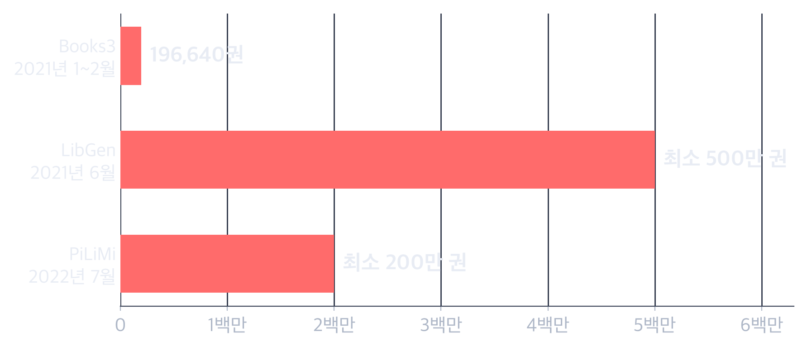
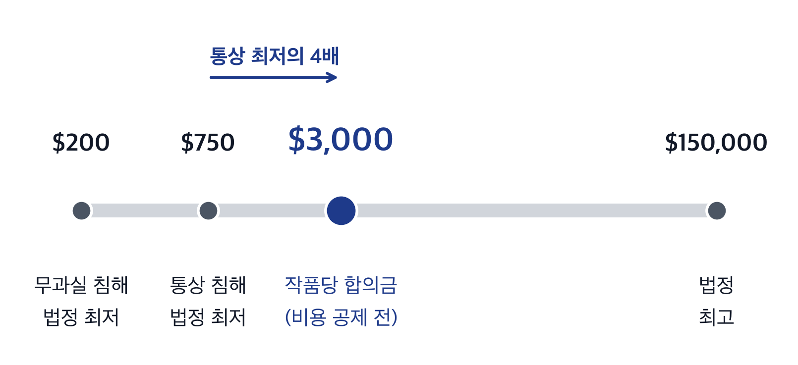
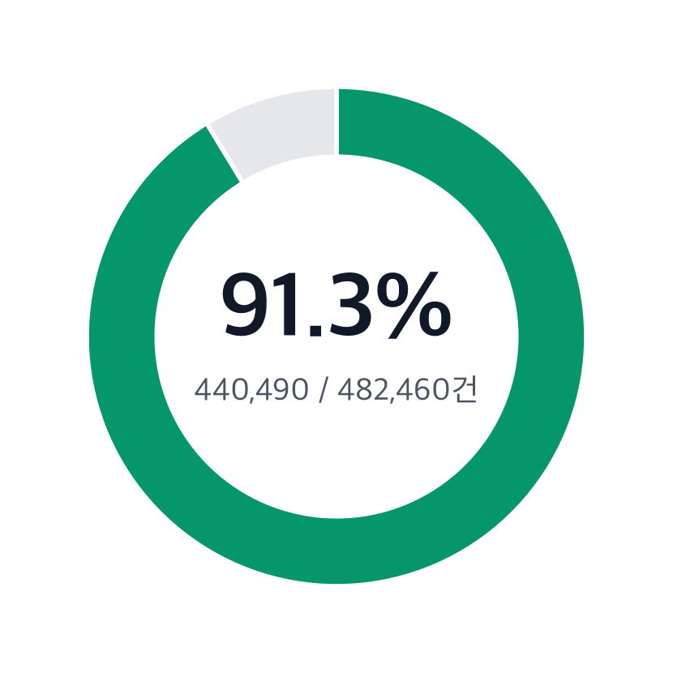

같은 책이라도 어떻게 손에 넣었는지에 따라 결론이 갈렸다. 학습 자체는 허용됐지만, 해적판을 모아 둔 행위 때문에 앤트로픽은 15억 달러를 물었다.
도서관의 책을 복제해 클로드의 언어모델을 학습시킨 것. 법원은 새 글을 쓰는 능력을 만드는 “본질적으로 변형적인” 이용으로 봤다.
중고 종이책 수백만 권을 사서 스캔하고 원본은 버렸다. 사본 수가 늘지 않았고 외부에 배포하지 않아 형식만 바꾼 것으로 봤다.
해적 사이트에서 700만 권 이상을 받아 “영원히” 보관했다. 살 수 있는 책을 훔친 것이라 어떤 목적으로도 정당화되지 않는다고 봤다.
2024년 8월, 작가들은 “앤트로픽이 내 책을 허락 없이 복제해 AI 학습에 썼다”며 소송을 제기했다. 같은 피해를 입은 저작권자 전체를 대표하는 집단소송이다.
세 작가와 이들이 세운 저작권 관리 법인(Bartz Inc., MJ + KJ Inc.)
4권
바츠의 소설
2권
그레이버의 논픽션
3권
존슨의 논픽션
이 9권이 해적판 또는 구매 경로로 앤트로픽 도서관에 들어갔다.
2021년 1월 OpenAI 출신들이 세운 AI 기업. 대화형 AI 클로드(Claude)를 운영하며 연 매출은 10억 달러 이상이다.
공정이용 판단: 윌리엄 알섭 판사
합의 최종승인: 아라셀리 마르티네스-올긴 판사

CEO는 책을 살 곳이 많았지만 “법적·실무적·사업적 수고”를 피하려 했다.
두 경로의 책이 모두 사내 도서관에 모였다. 내부 방침은 “모든 것을 영원히 보관”. 학습에 쓰지 않기로 한 책도 지우지 않았다.
서비스 단계에서는 필터가 입·출력을 걸렀다. 원고들도 클로드가 자기 책을 출력했다고는 주장하지 않았다. 이 소송은 ‘입력(학습)’만 다퉜다.
핵심은 2025년 6월 23일 판결이다. 해적판 부분이 배심 재판으로 넘어가자, 앤트로픽은 재판 대신 합의를 택했다.
미국 저작권법 제107조. 앤트로픽은 복제한 사실은 인정하고 “그 복제는 공정이용”이라고 맞섰다. 법원은 아래 네 요소를 종합해 사건마다 판단한다.
원작과 다른 새 목적을 더한 변형적 이용이면 유리하다.
사실·정보 중심이면 유리하고, 소설처럼 창작성이 높으면 불리하다.
목적에 비춰 필요한 만큼만 썼다면 유리하다. 전부 복제하면 원칙적으로 불리하다.
원작을 살 사람이 대신 이것을 쓰게 되면 불리하다.
한국 저작권법 제35조의5는 미국 제107조를 모델로 만들어졌다. 그래서 이 판결은 한국 법원에도 직접적인 참고자료가 된다.
| 미국 제107조 | 한국 제35조의5 제2항 |
|---|---|
| ① 이용의 목적과 성격 | 1. 이용의 목적 및 성격 |
| ② 저작물의 성격 | 2. 저작물의 종류 및 용도 |
| ③ 이용된 부분의 양과 중요성 | 3. 이용된 부분이 차지하는 비중과 중요성 |
| ④ 잠재적 시장·가치에 미치는 영향 | 4. 현재 또는 잠재적 시장·가치에 미치는 영향 |
미국처럼 텍스트·데이터 마이닝(TDM)을 따로 면책하는 조항이 없다. AI 학습 분쟁은 일반 공정이용 조항으로 판단할 가능성이 크다.
저작권자가 거부(옵트아웃)하지 않은 저작물은 TDM을 허용한다. EU AI법은 범용 AI 제공자에게 이 거부 의사를 지키도록 요구한다.
알섭 판사는 같은 책이라도 쓰임새가 다르면 각 이용을 따로 평가해야 한다고 보고, 먼저 앤트로픽의 ‘이용’이 몇 개인지부터 따졌다. 이 구분이 결론을 좌우했다.
근거: 학습에 안 쓸 책도 “영원히” 보관했고, 수백 명의 엔지니어가 제한 없이 접근했다. 즉 도서관 구축은 학습과 별개의 이용이다.
초록(+)은 공정이용에 유리, 빨강(−)은 불리, 회색(·)은 중립. 해적판 사본은 네 요소 모두 불리했다.
작가들은 클로드가 자기 책을 내놓았다고 주장하지 않았다. 판사는 “출력이 침해였다면 다른 사건”이라며 그런 소송은 따로 낼 수 있다고 했다.
저작권은 아이디어·방법·원리를 보호하지 않는다. 명작들에서 문법·구성·문체를 배워 섞는 것은 침해가 아니다.
판례 검색 AI 사건(Ross)은 경쟁 검색 도구를 만든 것이라 변형적이지 않았다. 새 글을 쓰는 생성형 AI는 다르다.
“AI가 경쟁작을 쏟아낸다”는 주장은 “아이들에게 글쓰기를 가르치면 경쟁작이 는다”는 불평과 같다고 봤다.
제3요소의 논리 — 중요한 것은 복제 과정에서 쓴 양이 아니라, 그 복제로 공중에게 접근 가능해진 양이 원작을 대체할 수 있느냐다. 클로드는 책을 내놓지 않았으므로 책 전체를 복제한 것도 “합리적으로 필요”했다.
판사는 “도서관도 학습의 일부”라는 앤트로픽 주장은 받아들이지 않았다. 대신 “종이를 디지털로 바꿨을 뿐”이라는 좁은 이유로 인정했다. 앞선 판례들과 사본 수를 비교하면 차이가 보인다.
학술지 복사
사본이 늘었다
검색용 디지털화
사본이 늘었다
TV 녹화
사본이 늘었다
스캔 후 종이 원본 폐기
외부 배포 없음
파일 공유
공정이용 부정
산 책은 소유자가 마음대로 처분할 수 있다(최초판매 원칙). 작가들도 구매 대금은 문제 삼지 않았다.
디지털본을 더 비싸게 팔 기회를 잃었다는 주장도 있었지만, 같은 책을 구매자마다 다른 값에 팔 권리는 저작권에 없다.
학습이 공정이용으로 인정된 근거는 ‘학습’이라는 변형적 목적이다. 법원은 해적판 수집이 이 목적을 벗어난 별개의 이용이라고 봤다. 그래서 학습의 면책을 함께 받을 수 없었다.
700만 권 이상을 받아 내부 방침대로 영구 보관했다.
학습에 쓰지 않기로 한 책까지 그대로 남겨 두었다.
수백 명의 엔지니어가 제한 없이 꺼내 다른 용도로 복제할 수 있었다.
비교: 메타 사건의 차브리아 판사는 “최종 목적이 학습이면 다운로드도 변형적”이라고 봤다. 이주연 논문은 앤트로픽이 도서관 없이 해적판을 곧바로 학습에만 썼다면 결론이 달라졌을 수 있다고 본다.
‘영구 도서관 구축’이라는 이용을 따로 심사하자 네 요소가 모두 공정이용에 불리하게 나왔다. (− = 공정이용에 불리)
해적판 책을 다운로드한 행위의 목적은 범용적 도서관 구축에 있다.
원고들의 책은 표현적 요소를 포함한다.
앤트로픽은 수백만 권의 책의 전부를 복제하였다.
해당 행위는 원고들 책에 대한 수요를 copy for copy로 대체한다.
결론 · 앤트로픽의 약식판결 신청 기각 → 해적판 도서관과 손해는 정식재판으로
서점에서 살 수 있는 책을 해적판으로 받는 것은 서평이든 연구든 AI 개발이든 “합리적으로 필요”했던 적이 없다. 판사는 이를 “본질적으로, 돌이킬 수 없이 침해”라고 했다. 실제로 앤트로픽은 나중에 책을 샀다.
앤트로픽 측 변론: “연구 목적이라고 스스로 축복하고 아무 교과서나 가져갈 수는 없다. 그러면 출판 시장이 무너진다.” 판사는 이 말을 그대로 인용했다.
구글 북스는 도서관이 정식으로 산 책을 빌려 엄격히 통제했다. 앤트로픽은 정식 사본도, 삭제도, 접근 통제도 없었다. 나중에 책을 사도 책임은 사라지지 않는다.
이 판결은 사건을 끝내지 않았다. 해적판 부분은 배심 재판으로 넘어갔고, 일부 쟁점은 증거가 부족해 판단이 미뤄졌다.
해적판으로 도서관을 만든 행위의 손해(실손해 또는 법정손해배상)와 고의 침해 여부를 배심원 앞에서 다투기로 했다.
→ 이 재판을 앞두고 15억 달러 합의가 이뤄졌다.
도서관 사본으로 학습 말고 다른 일에 쓴 복제본은 판단하지 않았다.
앤트로픽이 학습 데이터 구성표를 냈다가 회수하는 등 증거 제출을 피해 기록이 부족했기 때문이다.
공정이용은 피고가 증명해야 하는 항변이다. 약식판결이라 불분명한 사실은 모두 작가 쪽에 유리하게 해석됐다.
그런데도 학습 부분은 앤트로픽이 이겼다.
학습은 이겼지만 해적판 부분이 배심 재판으로 넘어갔다. 질 경우의 배상 규모가 너무 컸고, 양쪽 모두 결과를 장담할 수 없었다.
해적판 도서관의 손해액과 고의 침해 여부를 배심원이 정하게 됐다. 앤트로픽은 이 단계에서 해적판 취득의 악의를 다투지 않았고, 판사는 악의가 고의 판단에 영향을 줄 수 있다고 했다.
법정손해배상은 작품당 200~150,000달러다. 해적판 속 작품 약 48만 건이 집단으로 인정됐고, 고의로 인정되면 배상액이 올라갈 수 있었다.
법원: “원고들의 다운로드 주장은 강하지만, 재판에서 이긴다는 보장은 없다.” 앤트로픽은 집단 인증에 항소법원 불복을 내 둔 상태였고, 재판은 복잡하고 길 것으로 봤다.
통상 최저 $750 적용
실제 합의 (작품당 ≈$3,000)
최고 $150,000 적용 (이론상 상한)
합의 대상은 앤트로픽이 내려받은 LibGen·PiLiMi 해적판 속 작품이다. 앤트로픽은 이 해적판이 상용 모델 학습에는 쓰이지 않았다고 진술했다.
LibGen·PiLiMi에서 받은 원본과 그 복사본을 모두 폐기한다.
2025. 8. 25. 이전의 입력(해적판 취득·복제)만 면책된다. AI 출력이나 이후 행위에 대한 청구는 남는다.
작품 목록에 없는 작품(예: 미등록 작품)의 청구권은 이 합의와 관계없이 유지된다.
미국 법정손해배상은 작품당 200~150,000달러다. 가장 흔한 액수인 통상 침해 최저액 750달러의 4배가 합의액이고, 대상 작품의 대부분이 실제로 배상을 청구했다.

법정손해배상은 실제 손해를 증명하지 않아도 법이 정한 범위에서 작품당 받는 배상이다. 합의액은 몰랐던 침해의 최저액 200달러와 비교하면 15배 이상이다.

제외 신청은 350명(1,802건), 이의·의견은 54건뿐이었다. 법원은 반응이 “압도적으로 호의적”이라고 봤다.
이틀 뒤 같은 법원에서 메타 사건 판결이 나왔다. 두 회사 모두 해적판으로 LLM을 학습시켰지만, 판사가 무엇을 문제 삼았는지는 정반대였다.
노란 줄이 두 판사가 갈린 지점이다. 알섭 판사는 데이터를 어떻게 구했는지에, 차브리아 판사는 AI 결과물이 시장을 잠식하는지에 엄격했다.
| 비교 항목 | 앤트로픽 사건 (알섭 판사) | 메타 사건 (차브리아 판사) |
|---|---|---|
| 판단 구조 | 행위별로 쪼개어 판단 | 취득부터 학습까지 하나로 묶어 판단 |
| 제1요소: 학습 | + 본질적으로 변형적 | + 혁신적 도구 (단, 사람의 독서와는 다름) |
| 제1요소: 해적판 | − 학습과 별개의 비변형적 이용 | 최종 이용이 변형적이면 다운로드도 변형적 (최소 복제 요건 없음) |
| 제2·3요소 | − 표현적 저작물 / + 전체 복제는 합리적 | − 고도로 표현적 / + 같음 |
| 제4요소: 라이선스 시장 | 인정 안 함 | 인정 안 함 (인정하면 순환논리) |
| 제4요소: 시장 희석 | 고려 대상 아님 | 고려 대상 — 다만 이 사건은 증거 부족 |
| 결론 | 학습·디지털화 ✔ / 해적판 ✖ → 15억 달러 합의 | 증명책임 원칙에 따라 메타 신청 인용 → 공정이용 (이 원고들에 한해) |
학습이 변형적이라는 데는 이견이 없다. 그래서 저작권자가 이길 길은 제4요소(시장 피해)뿐이고, 판사는 그 경로를 셋으로 정리했다.
AI가 원작을 그대로 또는 비슷하게 출력해서, 사용자가 책을 사지 않고 무료로 보게 된다.
무단 학습 때문에 ‘AI 학습용 라이선스’라는 새 시장이 망가진다. 그러나 이를 인정하면 어떤 이용이든 “라이선스를 받았어야 한다”고 할 수 있어 저작권자가 항상 이긴다.
같은 주제·장르의 AI 작품이 쏟아져 원작을 간접적으로 대체한다. 사람이 쓴 로맨스 소설 대신 AI 로맨스 소설을 사는 경우다.
희석 피해는 모두에게 같지 않다. 유명 작가보다 신진 작가가, 소설보다 뉴스·논픽션 같은 기능적 저작물이 더 쉽게 대체된다. 비교 기준은 ‘LLM이 없는 세상’이 아니라 ‘저작권 있는 책으로 학습하지 않은 LLM이 있는 세상’이다.
학습 자체는 대체로 허용되는 흐름이다. 취득 경로와 시장 희석은 판사마다 판단이 갈려 여전히 열려 있다.
| 쟁점 | AI 기업에 유리한 시각 | 저작권자에 유리한 시각 | 현재 법원의 위치 |
|---|---|---|---|
| ① 학습 = 독서? | 읽고 배우는 데 매번 돈을 내지 않는다 | 사람도 책값은 낸다. LLM은 수많은 사용자 몫을 한다 | 두 판사 모두 변형적 인정 |
| ② 입력·출력 분리 | 출력이 침해가 아니면 학습은 무방 | 모델 속 ‘암기’ 자체가 복제다 | 침해 출력이 없다는 전제에서만 판단 |
| ③ 취득 적법성 | 최종 목적이 변형적이면 부차적 | 해적판 취득은 독립된 침해 | 판사마다 갈림 |
| ④ 라이선스 시장 | 인정하면 순환논리 | 이미 형성 중. 무조건 부정도 순환논리 | 두 판사 모두 불인정 |
| ⑤ 시장 희석 | 경쟁 증가는 보호 대상이 아니다 | 대량 경쟁작은 창작 의욕을 꺾는다 | 판사마다 갈림 |
| ⑥ 생성형 여부 | 새 글을 쓰면 변형적 | 원작과 같은 기능이면 변형적 아님 | 검색 AI(Ross) ✖ / 생성형 ✔ |
최초의 판단이지만 1심 약식판결이고, 합의로 끝나 항소심 판단을 받지 못했다. 영향력을 과대평가해서는 안 된다.
클로드라는 특정 모델과 이 사건 사실관계에 대한 판단이다. 모든 LLM에 적용되는 원칙이 아니다.
‘침해 출력은 없다’는 전제 위의 판단이다. 모델이 책을 그대로 내놓으면 결론이 달라질 수 있다.
시장이 생길 수 있다고 가정하고도 배척했다. 변형적이기만 하면 제4요소 문턱이 낮아진다는 비판이 있다.
학습 외 용도 사본은 판단하지 않았다. 합의는 2025. 8. 25. 이전의 ‘입력’과 작품 목록에 오른 작품만 면책한다.
이 사건은 “학습은 허용, 데이터는 정당하게”라는 기준을 처음 보여줬다. 같은 구조의 한국 법에도 그대로 적용될 수 있는 질문이다.